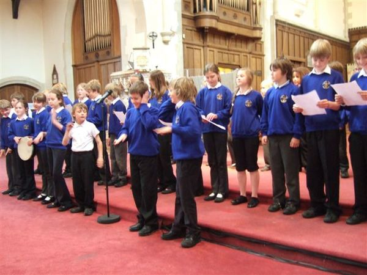
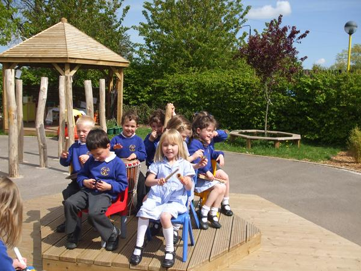

External Tour

The front of our school, a green and leafy place nestled in the Mendips.

Our trim trail. Can you do the monkey bars?

Our pergola. A shady place to sit and chat when its sunny.

Our wildlife pond. A favoured haunt of our local heron.

Foundation playground. Completed in 2008. A fantastic new resource for our youngest students.
Bishop's Service
The Diocese of Bath and Wells are celebrating their 11th centenary. Bishop Peter Price plans to walk around
the entire diocese visiting every deanery.
The twelve Church of England Schools in the deanery were invited ...
... to a service at St Paul's Church Weston Super Mare.

Each school had to offer their own presentation on 'celebrating what it means to be a C of E school in
this Diocese'. Year 5 created a rap.
N. Somerset Music Department

North Somerset Music Department sharing their extensive musical expertise playing different instruments
A variety of well known Television theme tunes were played. Which one was this, Eastenders or Match of the
Day?
Even the recorder was included!
Comparing different instruments
This looks an interesting instrument - the common garden hose!

Actions by the pupils as well!
Year 1 Photo Gallery
Finley is very proud of his bottle garden. "Look, it's raining in my garden," he said.
"It's pouring with rain, said Mrs Noah. "Go shut that door!" said Noah. "We're squashed," moaned the
children.
Foundation Photo Gallery

Reception creating a 'percussion orchestra' in the foundation stage playground.
Joshua and Vinny creating a map
Thomas and Izaac exploring colour mixing and the feeling of paint on their hands
Year 2 Photo Gallery
Everybody in the class played the violin